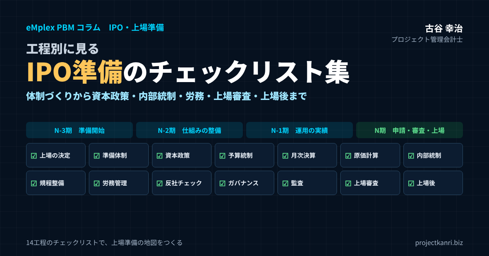

IPO準備のチェックリスト集―工程別に見る上場準備の全体像と実務の確認ポイント（体制づくり・資本政策・事業計画・決算早期化・内部統制・労務・ガバナンス・上場審査まで）

結論：IPO準備は「工程表」と「チェックリスト」で管理する
この記事のポイント
- IPO準備は全社のプロジェクト。工程表とチェックリストで管理する
- 上場したい時期から逆算し、今がN-3期〜N期のどこかを最初に確認
- 直前期より前に仕組みを整え、直前期は運用の実績を積む
- 14工程別のチェックリスト（意思決定・体制・資本政策・事業計画・月次決算・管理会計・内部統制・規程・労務・コンプライアンス・ガバナンス・監査・審査・上場後）
- プロジェクト型ビジネスはプロジェクト別原価計算と採算の早期把握が要
プロジェクト管理会計士の古谷です。上場を目指す会社のご支援をしていると、「何から手をつければよいのか分からない」「準備は進めているつもりだが、どこまでできているのか分からない」というご相談を数多くいただきます。
IPO準備は、一つの大きなプロジェクトです。しかも、経理、経営企画、人事労務、法務、総務、営業、現場の部門まで、会社のほとんどの部門が関わる、全社のプロジェクトです。プロジェクトを管理するのに工程表とチェックリストが欠かせないのと同じように、IPO準備も、工程ごとにやるべきことを洗い出し、進捗を確認できる形にしておくことが、成功の前提になります。
本記事では、IPO準備を十四の工程に分け、それぞれの工程で確認すべき項目をチェックリストの形で整理しました。すべての項目を一度に完璧にする必要はありません。大切なのは、全体像を把握したうえで、どの項目がいつまでに必要なのかを見極め、優先順位をつけて進めることです。チェックリストは、そのための地図だと考えてください。
なお、上場の基準や審査の内容は、市場や時期によって変わります。本記事のチェックリストは、私の実務の経験をもとにした一般的な整理です。実際の準備にあたっては、東京証券取引所の新規上場ガイドブックなどの公表資料と、主幹事の証券会社、監査法人の助言を必ず確認してください。
チェックリストは、本記事の工程の順に並べていますが、実際の準備では、複数の工程を並行して進めることになります。たとえば、資本政策の検討と、監査法人のショートレビュー、労務の点検は、同じN-3期の時期に並行して進めるのが一般的です。工程の番号は、作業の順番というよりも、準備の領域の区分だと考えてください。そのうえで、目安の時期の列を見ながら、今の時期に取り組むべき項目を確認していただくのが、このチェックリストの使い方です。
IPO準備の全体像とスケジュール
IPO準備のスケジュールは、上場の申請を行う事業年度を「申請期（N期）」とし、そこから遡って「直前期（N-1期）」「直前々期（N-2期）」と呼ぶのが一般的です。準備の開始は、直前々期のさらに前、N-3期ごろになることが多いでしょう。
| 時期 | 主な取り組み |
|---|---|
| N-3期 | 上場の意思決定、監査法人のショートレビュー、主幹事証券の選定、課題の洗い出しと準備計画 |
| N-2期（直前々期） | 監査契約・監査の開始、規程・内部統制・月次決算・予算統制などの仕組みの整備、資本政策の実行 |
| N-1期（直前期） | 整えた仕組みの運用の実績を積む、内部統制の運用、主幹事証券の引受審査の準備 |
| N期（申請期） | 主幹事証券の引受審査、取引所への上場申請・上場審査、上場承認、上場 |
市場や会社によって期間・要件は異なります。必ず取引所の公表資料と専門家の助言で確認してください。
一般の市場への上場では、上場の申請にあたって、直前々期と直前期の二期分の財務諸表について、監査法人の監査を受けている必要があります。つまり、直前々期が始まる前に、監査法人と監査の契約を結べる状態にしておかなければなりません。これが、IPO準備のスケジュールを逆算するうえでの最初の起点になります。市場ごとの具体的な要件は、取引所の公表資料で確認してください。
もう一つの起点は、直前期です。直前期は、整えた仕組みが実際に運用されていることを示す期間です。規程を作った、内部統制を整えた、月次決算の体制を作った。それらが直前期の一年間、きちんと運用されていたかどうかが、審査で問われます。直前期に入ってから仕組みを作り始めたのでは、運用の実績を示すことができません。
私が上場準備のご支援で最初にお伝えするのは、「上場したい時期から逆算して、今がどの期にあたるのかを確認してください」ということです。上場の目標の時期が決まれば、監査法人の監査をいつから受ける必要があるのか、仕組みをいつまでに整える必要があるのかが決まります。逆に言えば、その逆算ができていなければ、準備の優先順位もつけられません。
なお、ここで示したスケジュールは、あくまで一般的な目安です。会社の規模や管理の体制の成熟度、目指す市場によって、必要な準備の期間は大きく変わります。すでに管理の体制がある程度整っている会社であれば、準備の期間を短くできることもありますし、逆に、課題が多い会社では、N-3期よりもさらに前から準備を始める必要があることもあります。ショートレビューの結果を踏まえて、自社に合ったスケジュールを主幹事の証券会社、監査法人と相談して決めてください。
チェックリストの使い方：工程・期限・担当者・状態で管理する
本記事のチェックリストは、読んで終わりにするのではなく、自社の工程表に落とし込んで使っていただくことを想定しています。そのときに、一つひとつの項目に、次の四つの情報を付け加えてください。
| 情報 | 内容 | ポイント |
|---|---|---|
| 目安の時期 | どの期の、いつまでに必要か | 上場の目標時期から逆算して決める |
| 担当者 | 誰が責任を持って進めるか | 部署名ではなく個人名で決める |
| 完了の定義 | 何をもって完了とするか | 案の作成ではなく、運用の開始を基準に |
| 状態 | 未着手・進行中・完了・課題あり | 月に一度、準備の会議で確認 |
とくに大切なのは、担当者を個人の名前で決めることです。「経理部」や「管理部門」といった部署の名前を担当にしてしまうと、誰が責任を持って進めるのかが曖昧になり、項目が放置されます。部署の中で誰が担当するのかまで決めて、はじめてチェックリストは動き出します。
もう一つ大切なのは、「完了」の定義をはっきりさせることです。規程の整備であれば、規程の案ができた段階なのか、取締役会で承認された段階なのか、社内に周知されて運用が始まった段階なのか。IPO準備で問われるのは、ほとんどの場合、運用が始まっていることです。案ができた段階で完了にしてしまうと、直前期になってから運用の実績が足りないことに気づくことになります。
チェックリストの進捗は、月に一度程度、上場準備のプロジェクトの会議で確認することをおすすめします。遅れている項目、課題がある項目を中心に議論し、必要に応じて経営陣が判断します。IPO準備は、管理部門だけで進められるものではありません。経営陣が進捗を定期的に確認し、部門をまたがる課題に判断を下すことが、準備のスピードを決めます。
工程横断：上場準備の会議体と進捗管理の進め方
チェックリストを動かすためには、それを定期的に確認する場が必要です。私がおすすめしているのは、月に一度の上場準備のプロジェクトの会議と、四半期に一度の経営陣への報告の二層の構成です。
月に一度の会議では、上場準備の責任者が議長となり、各工程の担当者が集まって、チェックリストの状態を確認します。全項目を一つずつ読み上げる必要はありません。状態が「課題あり」の項目と、期限が近づいている項目、期限を過ぎた項目に絞って議論します。部門をまたがる課題、たとえば月次決算の早期化のために営業部門の報告の締め日を早める、といった課題は、その場で関係する部門の責任者と調整します。
四半期に一度は、経営会議や取締役会で、上場準備の全体の進捗を報告します。上場の目標の時期に対して、準備が計画どおりに進んでいるのか、遅れている工程はどこか、スケジュールに影響する課題はないか。経営陣が判断すべき事項、たとえば管理部門の人員の増強や、外部の専門家への追加の依頼、制度の変更に伴う費用の承認などを、この場で決めます。
会議の記録も残しておきましょう。誰が、いつ、何を決め、どの課題がどう解消されたのか。この記録そのものが、上場の準備を計画的に進めてきたことの証跡になり、審査で体制の整備の経緯を説明するときにも役立ちます。
工程別の主な担当部門と関わる専門家
十四の工程を、社内のどの部門が中心になって進め、どの外部の専門家が関わるのかを一覧にしておくと、担当者を決めるときの目安になります。会社の組織によって担当の部門は異なりますので、自社の組織に合わせて読み替えてください。
| 工程 | 社内の主な担当 | 主な外部専門家 |
|---|---|---|
| 1 意思決定・市場選択 | 経営陣 | 主幹事証券、監査法人 |
| 2 準備体制 | 経営陣、上場準備責任者 | 監査法人、主幹事証券 |
| 3 資本政策 | 経営陣、経営企画・財務 | 主幹事証券、税理士、弁護士 |
| 4 事業計画・予算統制 | 経営企画、各事業部門 | 主幹事証券 |
| 5 経理・月次決算 | 経理 | 監査法人 |
| 6 管理会計・原価計算 | 経理、経営企画、現場部門 | 監査法人、コンサルタント |
| 7 内部統制 | 内部監査、経理、各部門 | 監査法人、コンサルタント |
| 8 規程整備 | 総務・法務 | 弁護士、社会保険労務士 |
| 9 労務管理 | 人事、現場の管理職 | 社会保険労務士 |
| 10 コンプライアンス | 法務・総務 | 弁護士 |
| 11 機関設計・ガバナンス | 経営陣、総務・法務 | 弁護士 |
| 12 監査 | 経理 | 監査法人 |
| 13 上場審査 | 上場準備責任者、全部門 | 主幹事証券、印刷会社 |
| 14 上場後 | 経理、IR、法務 | 監査法人、株主名簿管理人、印刷会社 |
一覧を見ると、経理と経営企画の部門に、多くの工程が集中していることが分かります。上場の準備で管理部門の負担が大きくなるのは、このためです。一方で、労務管理は人事、規程や契約は法務や総務、プロジェクト別の原価計算は現場の部門の協力が欠かせません。工程ごとに中心となる部門を決め、関係する部門の協力の体制を明確にしておくことが、準備を滞らせないための工夫です。
外部の専門家との役割の分担も、早めに整理しておきましょう。たとえば、内部統制の文書化を、社内で行うのか、外部のコンサルタントに支援を依頼するのか。規程の整備を、弁護士に依頼するのか、社内で作成して弁護士に確認してもらうのか。役割の分担が曖昧なままでは、作業の重複や漏れが起き、費用もかさみます。
チェックリストを表計算ソフトで管理するときの項目設計
本記事のチェックリストを、表計算のソフトで管理する場合は、次のような列を設けておくと便利です。工程、項目の番号、チェックの項目、目安の時期、期限の日付、担当者、完了の定義、状態、課題とメモ、関係する外部の専門家、最終の更新の日。
状態の列は、「未着手」「進行中」「完了」「課題あり」の四つ程度の選択肢に限定しておくと、集計がしやすくなります。工程ごとに、完了した項目の割合を集計すれば、どの工程の準備が遅れているのかが一目で分かります。期限の日付と今日の日付を比べて、期限を過ぎた項目に色をつけるようにしておくと、会議での確認も効率的です。
ただし、チェックリストの管理そのものが目的になってしまわないように注意してください。表をきれいに整えることに時間をかけるよりも、課題のある項目について、誰が、いつまでに、何をするのかを決めることに時間を使うべきです。チェックリストは、あくまで準備を前に進めるための道具です。
工程1：上場の意思決定と市場選択のチェックリスト
IPO準備の最初の工程は、なぜ上場するのか、どの市場に上場するのかを決めることです。当たり前のことのように思えますが、ここが曖昧なまま準備を始めると、途中で経営陣の足並みが乱れ、準備が止まります。
| □ | チェック項目 | 目安の時期 |
|---|---|---|
| □ | 上場の目的（資金調達・信用力・採用・出口など）を経営陣で共有している | N-3期 |
| □ | 上場の目的と上場後の成長の道筋を説明できる言葉にしている | N-3期 |
| □ | 目指す市場（プライム・スタンダード・グロース・TOKYO PRO Market）を決めている | N-3期 |
| □ | 目指す市場の上場基準・形式要件を確認している | N-3期 |
| □ | 上場の目標時期を決め、N-3期〜N期を逆算している | N-3期 |
| □ | 上場準備と上場後の維持のコストを事業計画に織り込んでいる | N-3期 |
| □ | 上場に伴う経営陣・株主の義務と責任を理解している | N-3期 |
上場の目的は、資金調達、知名度や信用力の向上、人材の採用、株主の出口、事業承継など、会社によってさまざまです。どれが正しいということはありません。大切なのは、上場の目的を経営陣が共有し、上場によって何を実現したいのかを、社員や投資家に説明できる言葉にしておくことです。上場の審査でも、主幹事の証券会社のヒアリングでも、上場の目的と、上場後の成長の道筋は必ず問われます。
市場の選択も重要です。プライム、スタンダード、グロースの各市場と、プロの投資家向けのTOKYO PRO Marketでは、上場の基準も、求められる準備の水準も、上場後の義務も異なります。会社の規模や成長の段階、上場の目的に合わせて、どの市場を目指すのかを決めます。TOKYO PRO Marketへの上場から、一般の市場への市場の変更を目指すという道筋もあります。
そして、上場のコストを理解しておくことです。監査法人の監査の報酬、主幹事の証券会社への手数料、印刷会社や株主名簿管理人の費用、システムの導入、管理部門の人員の増強。IPO準備には、相応の費用と時間がかかります。上場の後も、開示や監査の対応、ガバナンスの維持のためのコストが毎年かかります。これらを事業計画に織り込んだうえで、上場の意思決定をすることが大切です。
上場をしないという選択肢も含めて検討することも大切です。上場は、成長のための手段の一つにすぎません。資金調達であれば、金融機関からの借入や、投資家からの出資、事業の提携といった方法もあります。上場の目的を突き詰めて考えた結果、別の手段のほうが自社に合っていると分かれば、それも立派な経営の判断です。逆に、そこまで考え抜いたうえで上場を選んだのであれば、準備の途中で迷いが生じても、経営陣が同じ方向を向いて進むことができます。
工程2：準備体制と外部専門家の選定のチェックリスト
上場を決めたら、準備を進める体制を作ります。社内のプロジェクトの体制と、外部の専門家の選定の二つが柱になります。
| □ | チェック項目 | 目安の時期 |
|---|---|---|
| □ | 上場準備の責任者（CFO・管理担当役員など）を決めている | N-3期 |
| □ | 上場準備のプロジェクトチームと会議体を設けている | N-3期 |
| □ | 管理部門の人員計画（経理・法務・内部監査など）を立てている | N-3期 |
| □ | 監査法人を選定し、ショートレビューを受けている | N-3期 |
| □ | 主幹事の証券会社を選定している | N-3期〜N-2期 |
| □ | 株主名簿管理人（信託銀行など）を選定している | N-2期 |
| □ | 印刷会社、弁護士、社会保険労務士など必要な専門家を選定している | N-2期 |
| □ | 内部監査の担当者を置き、内部監査を開始している | N-2期 |
社内の体制で最も重要なのは、上場準備の責任者を決めることです。多くの会社では、CFOや管理部門の担当役員が責任者を務めます。責任者が、他の業務と兼任で、上場準備に十分な時間を割けない状態では、準備は進みません。上場準備の経験のある人材を採用することも、有力な選択肢です。
外部の専門家の中で、最初に決めるべきは監査法人と主幹事の証券会社です。監査法人は、ショートレビューと呼ばれる予備調査で、会社の課題を洗い出し、監査を受けられる状態にするための助言を行います。主幹事の証券会社は、上場までのスケジュールの策定、資本政策、引受の審査を通じて、上場の準備全体を支援します。
このほか、株主名簿管理人となる信託銀行、上場の書類の作成を支援する印刷会社、法務の観点から支援する弁護士、労務の観点から支援する社会保険労務士なども必要になります。専門家を選ぶときは、費用だけでなく、自社の業種や規模の会社の上場の支援の経験があるか、担当者との相性はどうかを確認することが大切です。
管理部門の人員の計画も、この段階で立てておきます。上場の準備の期間中は、通常の業務に加えて、規程の整備、内部統制の文書化、監査法人や証券会社への対応など、多くの業務が発生します。上場の後も、開示の業務や内部監査の業務が加わります。経理、法務、内部監査など、どの機能にどれだけの人員が必要になるのかを見積もり、採用の計画を立ててください。経験のある人材の採用には時間がかかるため、早めに動くことが大切です。
工程3：資本政策のチェックリスト
資本政策とは、上場に向けて、株主の構成や株式の数、資金調達の計画をどのように設計するかを決めることです。資本政策は、一度実行すると、やり直すことがほとんどできません。それだけに、早い段階で慎重に検討する必要があります。
| □ | チェック項目 | 目安の時期 |
|---|---|---|
| □ | 現在の株主構成と持ち株比率を整理している | N-3期 |
| □ | 上場時・上場後の株主構成の目標を描いている | N-3期 |
| □ | 上場前の資金調達の計画（時期・金額・株価）を立てている | N-3期〜N-2期 |
| □ | 経営陣の持ち株比率と経営の安定性を検討している | N-3期 |
| □ | ストックオプションの付与の方針・対象・条件を設計している | N-2期 |
| □ | 株式の分割、種類株式の整理など必要な手続きを確認している | N-2期〜N-1期 |
| □ | 上場前の株式移動・新株発行に関する規則と開示を確認している | N-2期〜N期 |
| □ | 名義株や株主の所在不明などの問題を解消している | N-2期 |
資本政策で最も注意が必要なのは、経営陣の持ち株の比率です。上場の前の資金調達で、外部の投資家に多くの株式を渡してしまうと、上場の時点で経営陣の持ち株の比率が下がり、経営の安定性が損なわれるおそれがあります。上場の後の資金調達や、ストックオプションによる希薄化も見込んで、上場の後の株主の構成を描いておくことが大切です。
ストックオプションは、社員のモチベーションを高め、優秀な人材を採用するための有効な手段です。ただし、付与の対象、数量、行使の条件、税制の扱いを、慎重に設計する必要があります。上場の直前の株式の移動や、第三者への新株の発行には、取引所の規則による制限や、開示の義務がかかる場合もあります。資本政策は、主幹事の証券会社、監査法人、税理士などの専門家と相談しながら進めてください。
資本政策の表を作るときは、将来の資金調達の時期と金額、株価の想定、ストックオプションの行使による株式数の増加を、一つの表で見通せるようにします。この表を、経営陣、主幹事の証券会社、税理士と共有しながら、何度も修正を重ねていくのが一般的です。資本政策は、上場の時点の株主の構成だけでなく、上場の後の経営の自由度にも影響します。目先の資金調達の条件だけで判断しないようにしてください。
工程4：事業計画と予算統制のチェックリスト
上場の審査では、事業計画の合理性と、その計画を達成できる管理の体制が問われます。事業計画は、上場の申請の時点で突然作るものではありません。準備の段階から、予算を作り、月次で実績と比較し、差異を分析して対策を打つという予算統制の仕組みを運用しておく必要があります。
| □ | チェック項目 | 目安の時期 |
|---|---|---|
| □ | 中期経営計画（3〜5年）を策定している | N-2期 |
| □ | 売上・費用の計画の前提（顧客・受注残・人員計画）を説明できる | N-2期 |
| □ | 年度予算を策定し、取締役会で承認している | N-2期 |
| □ | 予算を部門別・事業別（必要に応じてプロジェクト別）に展開している | N-2期 |
| □ | 月次で予算と実績を比較し、差異の原因を分析している | N-2期〜 |
| □ | 年度の着地見通しを月次で更新している | N-2期〜 |
| □ | 予実の差異と対策を取締役会・経営会議に報告している | N-2期〜 |
| □ | 申請期の業績計画の達成可能性を定期的に点検している | N-1期〜N期 |
事業計画で問われるのは、数字の大きさではなく、数字の根拠です。売上の計画であれば、既存の顧客からの売上と新規の顧客からの売上をどう見込んでいるのか、受注の残高や営業の案件の状況とどうつながっているのか。費用の計画であれば、人員の計画や採用の計画とどうつながっているのか。一つひとつの数字の前提を説明できることが求められます。
そして、計画と実績の乖離です。上場の申請期の業績が、事業計画を大きく下回ると、上場のスケジュールそのものが見直されることがあります。上場の延期の事例の多くに、業績の計画の未達が関わっています。だからこそ、月次で予算と実績を比較し、着地の見通しを更新し続ける仕組みが欠かせません。過去の実績を報告するだけでなく、年度の着地を予測し、計画との乖離に早く気づいて手を打つ。いわゆるフォーキャストの経営が、IPO準備の土台になります。
予算を作るときには、部門や事業の単位だけでなく、プロジェクト型ビジネスであれば、受注の見込みとプロジェクトごとの採算の見込みを積み上げて作ることをおすすめします。受注の確度の高い案件と、まだ見込みの段階の案件を分けて管理し、売上の計画のうち、どれだけが受注残高で裏付けられているのかを示せるようにしておくと、事業計画の説得力が大きく高まります。
工程5：経理体制と月次決算の早期化のチェックリスト
上場の後は、四半期ごとの決算の発表や、半期報告書、有価証券報告書の提出など、決められた期限までに正確な財務情報を開示することが求められます。そのためには、月次の決算を早く、正確に締める体制が欠かせません。
| □ | チェック項目 | 目安の時期 |
|---|---|---|
| □ | 月次決算を締める日程（目標営業日）を決めている | N-2期 |
| □ | 月次決算の作業手順と担当者を明文化している | N-2期 |
| □ | 売上・原価・経費の計上の根拠と締めのルールを決めている | N-2期 |
| □ | 収益認識の会計方針を監査法人と協議し決めている | N-2期 |
| □ | 主要な会計方針（引当金・減価償却・在庫評価など）を整理している | N-2期 |
| □ | 勘定科目の残高の根拠資料を毎月作成している | N-2期〜 |
| □ | 経理の業務が特定の担当者に依存していない | N-1期 |
| □ | 開示書類を作成できる人員・体制を整えている | N-1期 |
月次決算の目標は、多くの会社で、翌月の十営業日程度、上場の準備が進んだ段階では五営業日程度を目安にしています。月次決算が遅い会社は、ほぼ例外なく、売上や原価の計上が締めの後の手作業に頼っています。請求書が月末を過ぎてから届く、現場からの報告が遅れる、売上の計上の根拠が担当者の頭の中にしかない。こうした状態を一つずつ解消していくことが、決算の早期化の本質です。
また、会計の方針の整備も重要です。とくに、収益の認識の方針は、上場の準備で必ず確認されます。一定の期間にわたって収益を認識するのか、一時点で認識するのか。プロジェクトの進捗をどう測るのか。会計の方針を監査法人と早めに協議し、それに沿った処理ができる体制を整えておく必要があります。
月次決算を早めるための仕組み作りについては、別のコラム「月次決算を5営業日で締める10の仕組み」や「仮締めと本締めとは？」でも詳しく解説していますので、あわせてご覧ください。
決算の早期化と並んで重要なのが、決算の正確性です。早く締めても、締めた後に数字の修正が繰り返されるようでは意味がありません。月次の段階で一度締めた数字を、後から修正する必要が生じた場合のルール、修正の承認の手続き、修正の記録の残し方を決めておきましょう。仮の締めと本の締めを分けて運用する考え方は、早さと正確さを両立させるための一つの方法です。
工程6：管理会計とプロジェクト別原価計算のチェックリスト
プロジェクト型ビジネスの会社にとって、IPO準備の大きな山場の一つが、プロジェクト別の原価計算の仕組みづくりです。建設、システム開発、コンサルティング、映像やイベントの制作といった業種では、売上と原価をプロジェクトごとに正しく対応させることが、正確な決算の前提になります。
| □ | チェック項目 | 目安の時期 |
|---|---|---|
| □ | プロジェクトの登録・コード体系のルールを決めている | N-2期 |
| □ | 社員の工数をプロジェクト別に日々記録し、上長が承認している | N-2期 |
| □ | 労務費・外注費・経費をプロジェクト別に集計している | N-2期 |
| □ | 間接費の配賦の基準を決め、継続して適用している | N-2期 |
| □ | 期末の仕掛品の残高をプロジェクト別に把握している | N-2期〜 |
| □ | 赤字プロジェクトの損失を適時に把握し、受注損失引当金を検討している | N-2期〜 |
| □ | プロジェクト別の採算の合計と決算の数字が一致している | N-1期 |
| □ | 受注時・進行中・完成時の採算を比較できる | N-1期 |
プロジェクト別の原価計算で最も手間がかかるのは、労務費の配賦です。社員が、どのプロジェクトに何時間を使ったのかを記録しなければ、プロジェクトごとの労務費は計算できません。タイムシートによる工数の記録の仕組みを整え、社員が日々入力し、上長が承認する運用を定着させる必要があります。工数の記録が月末にまとめて入力されるような状態では、原価の正確性に疑問を持たれます。
仕掛品の管理も重要です。期末の時点で完成していないプロジェクトの原価は、仕掛品として資産に計上します。どのプロジェクトにどれだけの原価が溜まっているのか、その原価は将来の売上で回収できるのか。回収できない見込みの原価は、損失として処理する必要があります。赤字のプロジェクトの損失を、適時に把握し、必要に応じて受注損失の引当金を計上する仕組みも、監査法人から必ず確認されます。
そして、管理会計の数字と財務会計の数字の一致です。プロジェクトごとの採算の数字を合計したものが、決算の数字と一致していなければ、管理会計の数字は信頼されません。プロジェクト管理の仕組みと会計の仕組みが連動していることが、IPO準備では強く求められます。
工数の記録の仕組みを新たに導入する場合は、導入の直後から正確な記録が集まるとは考えないほうがよいでしょう。入力の漏れ、入力の遅れ、プロジェクトのコードの選び間違いといった問題は、運用の初期には必ず起きます。数か月の試行の期間を設け、入力の状況を毎月確認し、記録の精度が安定してから、原価計算の正式な仕組みとして使い始める。そのくらいの余裕を持ったスケジュールを組んでおくことが大切です。
工程7：内部統制（J-SOX）のチェックリスト
上場の後は、財務報告に係る内部統制の評価と報告が求められます。いわゆるJ-SOXです。上場の準備の段階から、内部統制の仕組みを整え、運用しておく必要があります。
| □ | チェック項目 | 目安の時期 |
|---|---|---|
| □ | 内部統制の評価の範囲（重要な事業拠点・業務プロセス）を決めている | N-2期 |
| □ | 全社的な内部統制のチェックリストを整備している | N-2期 |
| □ | 決算・財務報告プロセスの統制を整備している | N-2期 |
| □ | 主要な業務プロセスの業務記述書・フローチャート・RCMを作成している | N-2期 |
| □ | 権限の分離と承認の手続きを整備し、証跡を残している | N-2期〜 |
| □ | ITシステムのアクセス管理・変更管理を整備している | N-2期 |
| □ | 内部監査で統制の運用状況を評価している | N-1期 |
| □ | 不備を把握し、改善を完了している | N-1期 |
内部統制の整備は、一般的に、全社的な内部統制、決算・財務報告のプロセス、業務のプロセスの三つの層で進めます。業務のプロセスでは、売上、仕入、在庫、人件費など、財務報告に大きな影響を与えるプロセスについて、業務の流れを文書にし、リスクと、それに対応する統制を明確にします。業務記述書、フローチャート、リスクコントロールマトリックスの、いわゆる三点セットを作成するのが一般的です。
内部統制で大切なのは、文書を作ることではなく、統制が実際に機能していることです。承認の手続きが規程で定められていても、実際には事後の承認や、承認者の不在の代理の承認が常態化していれば、内部統制は機能していません。権限の分離、承認の記録、システムのアクセスの管理など、統制の運用の証跡を残す仕組みを整えることが重要です。
新たに上場した会社には、一定の要件のもとで、内部統制の報告書についての監査法人の監査が一定期間免除される制度もあります。ただし、内部統制の報告書の提出そのものは求められますし、上場の審査では内部統制の整備と運用の状況が確認されます。制度の詳細は、金融庁や取引所の公表資料、監査法人の助言で確認してください。
内部統制の整備を進めるうえで、システムの役割は大きくなっています。承認の記録がシステムに残る、権限のない人がデータを変更できない、変更の履歴が追える。こうした仕組みがあれば、統制の運用の証跡を集める手間は大きく減ります。逆に、表計算のソフトと紙の承認に頼った運用では、証跡の収集と確認に多くの時間がかかります。どの業務をシステムで統制し、どの業務を手作業の統制で補うのかを、早めに整理しておくことをおすすめします。
工程8：社内規程の整備のチェックリスト
上場の準備では、会社の運営のルールを、社内の規程として文書にし、それに沿って運用することが求められます。規程が整っていなければ、内部統制も、ガバナンスも、労務管理も、説明することができません。
| □ | チェック項目 | 目安の時期 |
|---|---|---|
| □ | 定款を上場会社に適した内容に見直している | N-2期 |
| □ | 取締役会規程・監査役会（監査等委員会）規程を整備している | N-2期 |
| □ | 職務権限規程・稟議規程を整備し、運用している | N-2期 |
| □ | 経理規程・予算管理規程・原価計算規程を整備している | N-2期 |
| □ | 就業規則・賃金規程など労務関係の規程を整備している | N-2期 |
| □ | 内部者取引防止規程・適時開示規程を整備している | N-1期 |
| □ | 内部通報規程・コンプライアンス規程・反社会的勢力対応規程を整備している | N-2期 |
| □ | 規程と業務の実態が一致していることを確認している | N-1期 |
規程の整備でよくある失敗は、他社の規程のひな形をそのまま流用してしまうことです。ひな形の規程は、自社の実際の業務の流れと合っていないことが多く、規程と実態がずれた状態になります。上場の審査では、規程の内容だけでなく、規程に沿って実際に運用されているかが確認されます。規程を作るときは、自社の業務の流れを確認し、実際に守れるルールにすることが大切です。
とくに重要なのは、職務権限規程です。誰が、どの金額まで、どの事項を決められるのか。取締役会、経営会議、各役職の決裁の権限を明確にし、稟議の仕組みと連動させます。プロジェクト型ビジネスでは、受注の決裁、見積もりの承認、外注の発注、プロジェクトの予算の変更の承認など、プロジェクトに関わる権限を、具体的に定めておく必要があります。
規程は、一度作れば終わりではありません。組織の変更、業務の変更、法令の改正に合わせて、規程を見直す仕組みも必要です。規程の改定の手続き、改定の履歴の管理、社員への周知の方法を決めておきましょう。規程の数は、上場の準備の過程で数十に及ぶことも珍しくありません。規程の一覧を作り、それぞれの所管の部門と、最終の改定の日を管理しておくと、審査の対応もスムーズになります。
工程9：労務管理のチェックリスト
労務管理は、IPO準備で最も問題になりやすい領域の一つです。とくに、未払いの残業代と、長時間の労働は、上場の審査で厳しく確認されます。
| □ | チェック項目 | 目安の時期 |
|---|---|---|
| □ | 労働時間を客観的な方法で把握している | N-3期〜N-2期 |
| □ | 未払い残業代の有無を点検し、必要に応じて精算している | N-3期〜N-2期 |
| □ | 36協定を締結・届出し、上限を守っている | N-2期〜 |
| □ | 管理監督者の範囲が適切である | N-2期 |
| □ | 裁量労働制・みなし労働時間制などの運用が適切である | N-2期 |
| □ | 長時間労働者への対応（面談など）を行っている | N-2期〜 |
| □ | 社会保険・労働保険の加入が適切である | N-2期 |
| □ | 勤怠の時間とプロジェクトの工数の時間の整合を確認している | N-2期〜 |
未払いの残業代が見つかった場合、過去に遡って精算する必要があります。金額によっては、業績に大きな影響を与え、上場のスケジュールが見直されることもあります。労働時間の把握の方法、残業の申請と承認の仕組み、管理監督者の範囲、裁量労働制やみなし労働時間制の運用など、労務の仕組みを、社会保険労務士とともに早い段階で点検しておくことをおすすめします。
プロジェクト型ビジネスでは、プロジェクトの繁忙期に長時間の労働が集中しやすいという特徴があります。また、勤怠の記録とプロジェクトの工数の記録が別々の仕組みで管理され、両者の時間が一致しないこともよくあります。勤怠の時間と工数の時間の整合を確認できる仕組みを整えることは、労務管理の面でも、原価計算の面でも重要です。
労務の点検は、本社の部門だけでなく、支店や現場の事業所も含めて行うことが大切です。プロジェクトの現場に常駐している社員、客先に出向いている社員、出張の多い社員など、労働時間の把握が難しい働き方をしている社員ほど、問題が見つかりやすいからです。現場の管理職が、労務の基本的なルールを理解し、部下の労働時間を管理できるように、研修を行うことも検討してください。
工程10：コンプライアンス・反社チェック・関連当事者取引のチェックリスト
上場の会社には、法令の遵守と、健全な経営が求められます。コンプライアンスの体制、反社会的勢力との関係の排除、関連当事者との取引の整理は、上場の審査で必ず確認される項目です。
| □ | チェック項目 | 目安の時期 |
|---|---|---|
| □ | コンプライアンスの方針と推進の体制を整えている | N-2期 |
| □ | 取引先・株主・役員・社員の反社チェックを行っている | N-2期〜 |
| □ | 契約書に反社会的勢力の排除条項を入れている | N-2期 |
| □ | 関連当事者との取引を洗い出し、必要性と条件を検証している | N-2期 |
| □ | 不要な関連当事者取引を解消している | N-2期〜N-1期 |
| □ | 内部通報の窓口を設け、社員に周知している | N-2期 |
| □ | 事業に必要な許認可・法令の遵守状況を確認している | N-2期 |
| □ | 訴訟・紛争・行政処分の有無と対応を整理している | N-2期〜 |
反社会的勢力のチェックは、取引先、株主、役員、社員について、継続的に行う仕組みが必要です。新たな取引を始めるときのチェックだけでなく、既存の取引先についても定期的に確認します。契約書には、反社会的勢力の排除の条項を入れておきます。
関連当事者との取引とは、役員やその親族、役員が支配している会社などとの取引のことです。たとえば、社長が所有している不動産を会社が借りている、社長の親族の会社に業務を委託している、といった取引です。こうした取引は、取引の必要性と、条件の妥当性が厳しく確認されます。必要のない取引は解消し、継続する取引は、第三者との取引と同じ条件であることを説明できるようにしておく必要があります。
内部通報の制度も重要です。社員が不正や問題を発見したときに、安心して通報できる窓口があり、通報が適切に調査され、対応される仕組みが必要です。上場の準備の途中で、内部通報をきっかけに問題が発覚し、上場が延期される事例もあります。問題を早く発見し、早く対処するための仕組みとして、内部通報の制度を整えてください。
コンプライアンスの体制は、規程や窓口を整えるだけでは機能しません。経営陣が、法令の遵守を重視しているという姿勢を、繰り返し社員に示すことが大切です。研修の実施、違反があった場合の厳正な対応、そして経営陣自身の行動。上場の審査では、こうした会社の風土も、ヒアリングを通じて確認されます。
工程11：機関設計とコーポレートガバナンスのチェックリスト
上場の会社には、経営を監督し、株主の利益を守るための機関の設計が求められます。取締役会、監査役会や監査等委員会、社外の取締役と監査役、そして指名や報酬に関する仕組みです。
| □ | チェック項目 | 目安の時期 |
|---|---|---|
| □ | 機関設計（監査役会設置会社・監査等委員会設置会社など）を決めている | N-2期 |
| □ | 独立した社外取締役・社外監査役を確保している | N-2期〜N-1期 |
| □ | 取締役会を定期的に開催し、議事録を作成している | N-2期〜 |
| □ | 重要事項が取締役会で審議・決議されている | N-2期〜 |
| □ | 経営会議など執行側の会議体と取締役会の役割を分けている | N-2期 |
| □ | 役員報酬の決定の方針と手続きを定めている | N-1期 |
| □ | コーポレートガバナンス・コードへの対応方針を検討している | N-1期 |
| □ | 取締役会の運営を振り返る仕組み（実効性評価など）を試している | N-1期 |
機関の設計で最初に決めるのは、監査役会設置会社、監査等委員会設置会社、指名委員会等設置会社のどれを選ぶかです。上場を目指す会社では、監査役会設置会社か、監査等委員会設置会社を選ぶことが多いでしょう。どちらが良いかは、会社の規模、社外の役員の確保の見通し、経営の監督の考え方によって変わります。
社外の取締役と監査役の確保は、早めに動く必要があります。上場の基準や、コーポレートガバナンス・コードで求められる独立した社外の役員の要件を満たし、かつ、自社の事業を理解し、経営に有益な助言をしてくれる人材を見つけるには、時間がかかります。
そして、取締役会が実際に機能していることです。取締役会が定期的に開催され、重要な事項が審議され、議事録に記録されていること。経営の重要な判断が、取締役会の外で、社長一人で決められていないこと。形だけの取締役会は、上場の審査で問われます。取締役会の運営の振り返りとして、上場の前から実効性評価を試してみることも有効です。詳しくは、別のコラム「取締役会の実効性評価とは？」で解説しています。
取締役会の議事録は、審査で必ず確認される書類です。決議の結果だけでなく、どのような議論が行われたのか、社外の役員からどのような意見が出たのかを、要点として記録しておくことをおすすめします。重要な議案について、議論の経緯が議事録から読み取れることは、取締役会が実際に機能していることの何よりの証拠になります。
工程12：監査法人の監査とショートレビューのチェックリスト
監査法人との関係は、IPO準備の全期間を通じて続きます。ショートレビュー、監査の契約、直前々期と直前期の監査、そして上場の申請の書類の監査まで、監査法人とのやりとりは、準備のスケジュールの中心になります。
| □ | チェック項目 | 目安の時期 |
|---|---|---|
| □ | ショートレビューの課題に、対応方針・担当者・期限を決めている | N-3期 |
| □ | 課題の解消の進捗を定期的に確認している | N-3期〜 |
| □ | 監査契約を締結している | N-2期の期首まで |
| □ | 監査対象の最初の期の期首残高の根拠を整えている | N-2期 |
| □ | 棚卸資産・仕掛品の実地棚卸に監査法人が立ち会える体制がある | N-2期〜 |
| □ | 監査法人の指摘事項を記録し、対応している | N-2期〜 |
| □ | 期中・期末の監査の日程を月次決算の日程と調整している | N-2期〜 |
ショートレビューは、監査法人が、会社の会計の処理、内部統制、管理の体制を調べ、上場に向けた課題を報告するものです。ショートレビューの報告書には、数十項目に及ぶ課題が挙がることも珍しくありません。課題の一つひとつに、対応の方針、担当者、期限を決め、計画的に解消していくことが大切です。この課題の一覧そのものが、IPO準備のチェックリストの中心になります。
監査法人の選定は、近年、難しくなっていると言われます。監査法人の人手の不足などを背景に、上場の準備の会社の監査を引き受けてもらえるまでに時間がかかる場合があります。上場の目標の時期から逆算して、早めに監査法人との相談を始めることをおすすめします。監査法人の選び方については、別のコラム「上場準備における監査法人選定と対応実務の勘所」もご参照ください。
期首の残高の確定も、見落としやすい論点です。監査の対象となる最初の期の期首の残高、つまり直前々期の期首の時点の資産や負債の残高が、正しいことを確かめる必要があります。在庫や仕掛品、売掛金、未払いの費用などの残高が、根拠のある数字になっているかを、監査の契約の前に点検しておきましょう。
監査法人とのコミュニケーションの頻度も大切です。会計の処理で判断に迷う取引が発生したときに、決算の後になってから相談するのではなく、取引の前や発生した時点で相談する習慣をつけてください。決算の後に処理が覆ると、数字の修正に時間がかかり、月次決算や開示のスケジュールにも影響が出ます。
監査の報酬の見積もりも、早めに確認しておきましょう。監査の報酬は、会社の規模、事業の複雑さ、管理の体制の成熟度によって大きく変わります。管理の体制が整っていない会社ほど、監査に時間がかかり、報酬も高くなる傾向があります。ショートレビューの課題を早く解消することは、監査の負担を減らし、結果として監査の報酬を抑えることにもつながります。
工程13：主幹事証券の審査と取引所の上場審査のチェックリスト
直前期の決算が固まると、いよいよ審査の段階に入ります。まず主幹事の証券会社による引受の審査があり、その後、取引所に上場を申請し、取引所の審査を受けます。
| □ | チェック項目 | 目安の時期 |
|---|---|---|
| □ | 上場申請書類（いわゆるⅠの部など）の作成体制を整えている | N-1期〜N期 |
| □ | 主幹事証券の引受審査の質問に、根拠資料を添えて回答している | N期 |
| □ | 審査対応と月次決算を並行して回せる体制がある | N期 |
| □ | 事業計画と直近の業績の乖離を説明できる | N期 |
| □ | 社長面談に向け、事業・戦略・リスク・上場目的を社長自ら語れる | N期 |
| □ | 監査役面談・公認会計士ヒアリングに備えている | N期 |
| □ | 審査で指摘された事項を速やかに改善している | N期 |
審査では、上場の申請の書類をもとに、多くの質問が出されます。質問への回答は、書面で行い、根拠となる資料を添えます。回答の期限は短く、回答の内容が不十分であれば、追加の質問が続きます。審査の期間中は、管理部門の担当者は審査の対応に多くの時間を取られます。日常の業務、とくに月次決算を、審査の対応と並行して確実に回せる体制を作っておくことが大切です。
審査で問われる観点は、大きく、企業の継続性と収益性、経営の健全性、コーポレート・ガバナンスと内部管理の体制の有効性、開示の適正性、そして公益と投資者の保護です。これらの観点について、会社がどのような体制を整え、どのように運用しているのかを、具体的な資料と事実で説明する必要があります。
社長の面談や、監査役の面談、公認会計士へのヒアリングが行われることもあります。社長の面談では、事業の内容、成長の戦略、リスクへの認識、上場の目的などが問われます。社長が自らの言葉で、自社の事業と計画を語れることが重要です。準備の段階から、管理部門だけでなく、社長自身が審査を意識して準備を進めてください。
上場の審査では、社内の誰がどの質問に答えるのか、回答の内容を誰が確認するのかという、審査の対応の体制を事前に決めておくことも重要です。部門ごとに回答の内容がばらばらだったり、以前の回答と矛盾したりすると、追加の質問が増えます。回答の一覧を作り、回答の内容と根拠の資料を一元的に管理しておくと、審査の対応の質が上がります。
工程14：上場承認から上場日、上場後までのチェックリスト
取引所の審査を通過し、上場が承認されると、上場の日までの期間は、それほど長くありません。この期間に、有価証券届出書の提出、投資家への説明、公開の価格の決定といった手続きが集中します。
| □ | チェック項目 | 目安の時期 |
|---|---|---|
| □ | 有価証券届出書など上場に伴う書類の提出準備をしている | 上場承認前後 |
| □ | 投資家への説明（ロードショー）の資料と想定問答を準備している | 上場承認後 |
| □ | 上場日まで月次業績の見通しと計画の乖離を確認している | 上場日まで |
| □ | 決算発表・有価証券報告書・半期報告書の作成体制がある | 上場後 |
| □ | 適時開示の判断と手続きのフローを整えている | 上場前〜 |
| □ | 内部統制報告書の作成体制がある | 上場後 |
| □ | 業績予想の修正の判断基準と手続きを決めている | 上場前〜 |
| □ | IR（投資家との対話）の体制を整えている | 上場前〜 |
上場の承認の後に、業績の大きな下方の修正や、重大な不祥事が判明すると、上場が延期されたり、承認が取り消されたりすることがあります。上場の日まで、気を緩めることはできません。月次の業績の見通しと、上場の書類に記載した計画との乖離を、引き続き確認してください。
上場はゴールではなく、スタートです。上場の後は、決算の発表、有価証券報告書や半期報告書の提出、適時の開示、内部統制の報告、コーポレート・ガバナンスに関する報告書の更新、株主総会の運営など、上場会社としての義務が続きます。四半期の開示の制度は、2024年に四半期報告書が廃止されて決算短信に一本化されるなど、制度の見直しが続いています。最新の制度は、金融庁と取引所の公表資料で確認してください。
上場の後に業績の予想を下方に修正すると、株価や投資家の信頼に大きな影響が出ます。上場の後こそ、精度の高い業績の見通しを立て、早い段階で変化に気づく仕組みが重要になります。
上場の後の体制を、上場の前から試しておくことも有効です。たとえば、直前期のうちから、四半期ごとに上場会社と同じ水準の決算の資料を作ってみる、適時の開示が必要になる事象が起きたと仮定して判断の手続きを試してみる、といった取り組みです。上場の後に初めて経験するよりも、準備の段階で一度経験しておくほうが、上場の直後の混乱を防ぐことができます。
申請期（N期）に入る前の最終チェックリスト
直前期の終わりから申請期に入る前の時期は、それまでの準備の総点検を行う最後の機会です。ここで見つかった課題は、まだ対処の余地があります。私が、この時期に必ず確認していただいている項目を、最終チェックリストとしてまとめます。
| □ | 確認項目 |
|---|---|
| □ | 直前々期・直前期の監査を受け、重大な指摘事項が解消されている |
| □ | 規程が整備され、直前期の一年間、規程どおりに運用されている |
| □ | 内部統制の不備が改善され、運用の証跡が残っている |
| □ | 月次決算が目標の営業日で安定して締まっている |
| □ | 申請期の予算と業績見通しが、直近の実績・受注残と整合している |
| □ | 未払い残業代・長時間労働の問題が解消されている |
| □ | 関連当事者取引が整理され、残る取引の必要性と条件を説明できる |
| □ | 社外役員を含む取締役会・監査役会などが実際に機能している |
| □ | 反社チェックが継続的に行われ、記録が残っている |
| □ | 審査対応の体制（回答者・確認者・資料の管理）が決まっている |
この最終チェックリストで「いいえ」が残る場合は、主幹事の証券会社、監査法人と早めに相談してください。課題を抱えたまま審査に入ると、審査の途中で追加の質問や改善の要請が重なり、スケジュールが大きく遅れることがあります。課題を正直に共有し、解消の計画とともに審査に臨むほうが、結果として上場への近道になります。
プロジェクト型ビジネスのIPO準備で特に注意したいチェックポイント
ここまで、工程別のチェックリストを見てきました。そのうえで、建設、システム開発、コンサルティング、映像やイベントの制作といったプロジェクト型ビジネスの会社が、IPO準備で特に注意したいポイントをまとめます。
| 論点 | 確認すること |
|---|---|
| プロジェクト別原価計算 | 工数の記録・承認、労務費・外注費の集計、間接費の配賦 |
| 採算の早期把握 | 受注時・進行中・完成時の採算の比較、赤字の兆候の早期報告 |
| 仕掛品・受注損失 | 期末の仕掛品の残高、回収可能性、受注損失引当金 |
| 売上の計上時期 | 検収の予定と条件の管理、収益認識の方針と進捗の測り方 |
| 外注の管理 | 発注の承認、下請取引に関する法令の遵守、外注費の計上時期 |
| 大型案件への依存 | 少数の大型案件が業績計画に与える影響と対策 |
プロジェクト型ビジネスの会社では、会社の業績が、少数の大型のプロジェクトの採算に大きく左右されます。一つの大型の案件で原価が膨らみ、赤字になれば、会社全体の業績の計画が崩れます。上場の申請期にこれが起きると、上場のスケジュールに直結します。だからこそ、受注の段階の見込みの採算、進行中の見通しの採算、完成時の実績の採算を、プロジェクトごとに把握し、採算の悪化の兆候を早く掴む仕組みが欠かせません。
もう一つは、売上の計上の時期です。プロジェクトの検収の時期がずれると、売上が期をまたいで移動し、四半期や年度の業績が大きく変わります。検収の予定の管理、顧客との検収の条件の確認、一定の期間にわたって収益を認識する場合の進捗の測り方を、会計の方針として整理しておく必要があります。
そして、外注の管理です。プロジェクト型ビジネスでは、外注先への依存度が高いことが多く、外注の発注の承認、下請けの取引に関する法令の遵守、外注費の計上の時期など、確認すべき点が多くあります。発注から検収、支払いまでの流れを、プロジェクトの管理と会計の両面で一貫して管理できる体制を整えてください。
プロジェクト型ビジネスの会社の上場の審査では、受注から納品、検収、請求、入金までの一連の流れについて、具体的な案件を例にとって説明を求められることがあります。見積もりの根拠、受注の承認、プロジェクトの予算の設定、進捗と原価の管理、検収の確認、売上の計上。この流れが、規程と、システムと、実際の運用で一貫していることを示せるよう、代表的な案件の資料を整えておくことをおすすめします。
TOKYO PRO Marketを目指す場合のチェックポイント
TOKYO PRO Marketは、プロの投資家向けの市場です。一般の市場とは制度の枠組みが異なり、J-Adviserと呼ばれる取引所の資格を持った機関が、上場の適格性の調査と、上場の後の支援を担います。
一般の市場と比べると、上場の基準に数値の基準が設けられていない、監査の期間が短いなど、準備の負担は相対的に軽いと言われます。ただし、それは管理の体制が不要だという意味ではありません。上場の会社として、正確な財務情報を適時に開示し、健全な経営を続けるための体制は、TOKYO PRO Marketでも求められます。
| 確認事項 | 内容 |
|---|---|
| J-Adviserの選定 | 上場適格性の調査と上場後の支援を担う機関を選ぶ |
| 上場の要件 | 取引所とJ-Adviserに具体的な要件と準備事項を確認する |
| 開示の体制 | 適時に正確な財務情報を開示できる体制を整える |
| 将来の市場変更 | 一般の市場への移行を目指すなら、その水準を意識して体制を整える |
私自身、フロンティアハウスでの上場準備・経営企画・広報IRの責任者として、TOKYO PRO Marketへの上場に携わりました。その経験から言えるのは、TOKYO PRO Marketへの上場は、管理の体制を整え、上場の会社としての運営に慣れるための、良い機会になるということです。将来、一般の市場への市場の変更を目指すのであれば、TOKYO PRO Marketへの上場の準備の段階から、一般の市場の水準を意識して体制を整えておくと、その後の移行がスムーズになります。具体的な要件は、取引所とJ-Adviserに必ず確認してください。
IPO準備でよくある失敗とチェックリストで防げること
IPO準備の失敗には、いくつかの典型的なパターンがあります。その多くは、チェックリストと工程表で準備を管理していれば、早い段階で気づき、防ぐことができるものです。
| 失敗のパターン | 起きること | 防ぐためのチェック |
|---|---|---|
| 準備の開始が遅い | 監査の期間が足りず、上場時期が後ろ倒し | 目標時期からの逆算（工程1） |
| 未払い残業代の発覚 | 精算で業績が悪化、スケジュールの見直し | 労働時間の把握と早期点検（工程9） |
| 業績計画の未達 | 申請期の業績が計画を下回り延期 | 予実管理と着地見通しの更新（工程4） |
| 規程と実態のずれ | 運用の実績を示せない | 実態に合わせた規程と運用の確認（工程8） |
| 関連当事者取引の残存 | 必要性・条件の説明ができない | 早期の洗い出しと解消（工程10） |
| プロジェクト原価の不備 | 仕掛品・損失の計上が遅れ、決算の信頼性が揺らぐ | 工数の記録と採算の早期把握（工程6） |
| 審査対応で月次決算が遅延 | 開示体制への疑問 | 審査と日常業務を並行できる体制（工程13） |
これらの失敗に共通しているのは、問題に気づくのが遅いということです。未払いの残業代も、規程と実態のずれも、業績の計画の未達も、早く気づけば対処の方法はあります。しかし、直前期の後半や申請期になってから気づくと、対処のための時間が足りず、上場のスケジュールを動かすしかなくなります。チェックリストの本当の価値は、問題を早く見つけることにあります。
上場の延期の事例については、別のコラム「失敗から学ぶIPO延期事例の分析」で詳しく解説しています。あわせてご覧いただくと、チェックリストの各項目が、なぜ重要なのかがより具体的に分かると思います。
チェックリストで防げない失敗もあります。それは、経営陣の上場への意志が揺らぐことです。準備の負担の大きさ、費用、上場の後の義務を前にして、途中で経営陣の考えが割れてしまうと、どれほど精緻なチェックリストがあっても、準備は進みません。工程1で、上場の目的を経営陣で共有しておくことが重要なのは、このためです。
私がIPO準備の現場で学んだこと
私は、エンプレックスで取締役CFOとして上場準備に携わり、その後、フロンティアハウスではTOKYO PRO Marketへの上場の準備に携わりました。独立してからは、上場を目指す会社を含め、200社を超える企業の経営管理をご支援してきました。
その経験から実感しているのは、IPO準備で最も時間がかかるのは、仕組みを作ることではなく、仕組みを運用に乗せることだということです。規程は数か月で作れます。しかし、その規程に沿って社員が動き、承認の記録が残り、月次の決算が毎月同じ品質で締まるようになるまでには、一年以上の時間がかかります。だからこそ、仕組みづくりは、直前期より前に終えておく必要があるのです。
もう一つは、管理部門だけでは上場できないということです。月次決算の早期化には、営業や現場からの報告が欠かせません。プロジェクト別の原価計算には、現場の社員の工数の入力が欠かせません。労務管理には、現場の管理職の協力が欠かせません。上場の準備を、管理部門の仕事ではなく、全社のプロジェクトとして位置づけ、経営陣が先頭に立って進めることが、成功の条件だと考えています。
そして、上場の準備で整えた仕組みは、上場のためだけのものではないということです。月次の決算が早く締まり、プロジェクトごとの採算が見え、予算と実績の差異に早く気づける。こうした仕組みは、経営の判断の質を高め、会社の成長を支える土台になります。上場の準備を、管理の体制を一段引き上げる機会として前向きに捉えていただければと思います。
IPO準備を支えるプロジェクト管理会計の仕組み
プロジェクト型ビジネスのIPO準備では、プロジェクトごとの予算、実績、見通しを正確に把握し、会計の数字と連動させる仕組みが、多くのチェック項目の土台になります。プロジェクト別の原価計算、月次決算の早期化、予算統制、業績の見通しの精度。これらはすべて、プロジェクトの数字が、正しく、早く集まる仕組みがあってはじめて実現できます。
プロジェクトごとの予算・実績・見通しを可視化する「eMplex PBM」は、プロジェクト別の収支の管理や、着地の見通しの把握を通じて、IPO準備に必要な管理会計の仕組みづくりを支える選択肢の一つとしてご活用いただけます。システムを導入するかどうかにかかわらず、まずは、自社のプロジェクトの数字が、どこで、誰によって、どのタイミングで集められているのかを、チェックリストの観点で点検してみてください。
まとめ
IPO準備は、会社のほとんどの部門が関わる、数年がかりの全社のプロジェクトです。上場の意思決定と市場の選択、準備の体制と外部の専門家の選定、資本政策、事業計画と予算統制、経理の体制と月次決算の早期化、管理会計とプロジェクト別の原価計算、内部統制、規程の整備、労務管理、コンプライアンス、機関の設計とガバナンス、監査、上場の審査、そして上場の後。それぞれの工程で確認すべき項目を洗い出し、期限、担当者、状態を決めて管理することが、準備を確実に進めるための基本です。
チェックリストの価値は、問題を早く見つけることにあります。上場したい時期から逆算して、今がどの期にあたるのかを確認し、直前期より前に仕組みを整え、直前期には運用の実績を積む。この順番を守ることが、上場の延期を防ぐ最大の対策です。本記事のチェックリストを、自社の工程表に落とし込み、IPO準備の地図としてご活用ください。
よくある質問（FAQ）
Q. IPO準備はいつから始めるべきですか？
A. 一般の市場では、直前々期と直前期の二期分の財務諸表について監査法人の監査が必要です。そのため、上場の目標の時期から逆算し、直前々期が始まる前（N-3期ごろ）には監査法人のショートレビューを受け、準備を始めるのが一般的です。具体的な要件は取引所の新規上場ガイドブックで確認してください。
Q. IPO準備のチェックリストはどのように使えばよいですか？
A. 各項目に、目安の時期、担当者（個人名）、完了の定義、状態の四つを付けて自社の工程表に落とし込み、月に一度程度、上場準備の会議で進捗を確認します。運用が始まった段階を完了とすることが大切です。
Q. IPO準備で最も問題になりやすい工程はどこですか？
A. 労務管理（未払い残業代・長時間労働）、業績の計画の未達、内部統制や規程と実態のずれ、関連当事者取引、内部通報をきっかけとした不祥事の発覚などが問題になりやすい領域です。いずれも早く気づけば対処できるため、早期の点検が重要です。
Q. プロジェクト型ビジネスのIPO準備で特に注意すべき点は？
A. プロジェクト別原価計算（工数の記録と労務費の配賦）、仕掛品と受注損失の管理、売上の計上時期（検収・収益認識）、外注の管理、大型案件の採算悪化の早期把握です。プロジェクト管理と会計の数字が連動していることが求められます。
Q. 月次決算は何営業日で締める必要がありますか？
A. 法令で決まった日数はありませんが、上場後の開示の期限を考えると、翌月10営業日程度、準備が進んだ段階では5営業日程度を目安にする会社が多いです。
Q. TOKYO PRO Marketの上場準備は一般の市場と何が違いますか？
A. プロの投資家向けの市場で、J-Adviserが上場適格性の調査と上場後の支援を担います。数値基準がなく監査期間も短いなど、準備の負担は相対的に軽いとされますが、適時開示と健全な経営のための体制は必要です。詳細は取引所とJ-Adviserに確認してください。
参考資料
本記事のチェックリストは、一般的な整理です。上場の基準や審査の内容、開示の制度は改正されることがあります。実際の準備にあたっては、取引所の最新の公表資料と、主幹事の証券会社・監査法人などの専門家の助言をご確認ください。